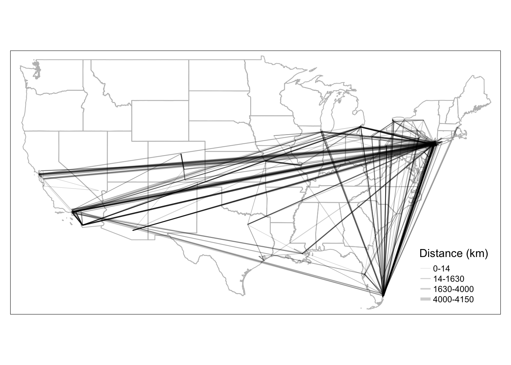

Chapter 4 Visualizing Edges
In this chapter, we will use commute data from U.S. Census LEHD (Longitudinal Employer-Household Dynamics) Origin-Destination Employment Statistics (LODES). We will use lehdr package to download LODES commute data between counties in Georgia and use tigris to download county shapefiles and convert to centroids as points in the spatial networks.
This chapter covers the following topics:
- How to convert point data into line geometry
- How to visualize edges with constant color and size
- How to visualize edges with varying edge width by attributes
- How to visualize edges with varying edge color by attributes
- How to visualize edges with varying edge size and edge color with a combined legend
You will be able to find a copy of all the codes at the bottom of the page.

Before proceeding to the codes, please load the following packages:
library(sf) #for using spatial objects
library(tidyverse) #for using tidy syntax
library(tmap) #for visualizing maps
library(tigris) #for downloading TIGER boundary shapefiles
library(lehdr) #for downloading LODES commute data
library(stplanr) #for using od2line function to convert points to lines4.1 Convert Points into Lines
To start, we use lehdr package to download LODES commute data between counties in Georgia and use tigris package to download county shapefiles and convert to centroids as points in the spatial networks.
#counties is a function in tigris package
GA_county = counties(state = 'GA', cb=TRUE, year=2018, progress_bar=FALSE)
#grab_lodes is a function in lehdr package
data = grab_lodes(state='ga', year=2018, lodes_type = 'od', state_part = 'main', agg_geo = 'county')
#filter top 1000 county-to-county flows
ctc_commutes = data %>% select(c(w_county, h_county, S000)) %>%
rename(flow = S000) %>%
filter(h_county != w_county) %>%
arrange(desc(flow)) %>%
slice(1:1000)
head(ctc_commutes, 3)## # A tibble: 3 × 3
## w_county h_county flow
## <chr> <chr> <dbl>
## 1 13121 13089 128889
## 2 13121 13067 109627
## 3 13121 13135 87646Columns h_county and w_county contain the county FIPS (or GEOID) codes. S000 contains the total number of job flows between the home county and the work county. We also only want to create lines between counties, so we will filter out flows that have the same h_county and w_county.
There are THREE ways to convert points into a line geometry.
4.1.1 Method 1: Use od2line function in stplanr package.
od2line takes in an OD dataframe that assumes the first two column contains the origin and destination variables that can be matched to the shapefile. In our case, those are the county GEOID. This method is particularly useful if you stores your OD dataframe and your shapefiles separately. This is the easiest way for our dataset to convert into lines. The only downside is you have one more package dependency. We encourage readers to explore other useful OD-related functions in the stplanr package, such as dist_google(), od_coords2line(), od_to_odmatrix() and so on.
library(stplanr)
cnty_centroid = GA_county %>% st_centroid() %>% select(c(GEOID, geometry))
edges = od2line(ctc_commutes, cnty_centroid)
head(edges, 3)## Simple feature collection with 3 features and 3 fields
## Geometry type: LINESTRING
## Dimension: XY
## Bounding box: xmin: -84.5767 ymin: 33.77149 xmax: -84.02363 ymax: 33.96167
## Geodetic CRS: NAD83
## w_county h_county flow geometry
## 1 13121 13089 128889 LINESTRING (-84.4676 33.789...
## 2 13121 13067 109627 LINESTRING (-84.4676 33.789...
## 3 13121 13135 87646 LINESTRING (-84.4676 33.789...4.1.2 Method 2: Group by lineID and Summarize Points into Line
The second one is to group the points coordinates by line ID, summarize the flow values, and then use st_cast in the sf package to turn the grouped point coordinates into a line geometry. This method is particularly useful if your points are organized by line ID and if you do not want to use extra packages. It is also convenient GPS trajectory data because each row is a point data associated with a line ID and you want to connect all the points that represent one trajectory.
For our data, we do not have line ID for points, but we can create such ID with row_number(). To leverage method 1, we have to split one OD pair into two rows so that the first row contains the point geometry of the origin and the second row contains the point geometry of the destination. To do that, we perform a little trick: we swap the position of the h_county and w_county of ctc_commutes and bind it to the existing ctc_commutes dataframe. Then when we join county shapefiles by h_county, we actually join the shapefiles for both the origin county and the destination county. Then we can use the group_by and summarise method to create lines. Noted that column ID needs to be created before and during binding the ctc_commutes, so that group_by knows which OD is one the same line. You also need to ensure the dataframe is an sf object after doing left_join through st_as_sf().
edges = ctc_commutes %>%
mutate(ID = row_number()) %>%
bind_rows(ctc_commutes %>% rename(w_county = h_county, h_county = w_county) %>% mutate(ID = row_number())) %>%
left_join(GA_county %>% st_centroid() %>% select(c(GEOID, geometry)), by=c('h_county' = 'GEOID'), copy=FALSE) %>%
st_as_sf() %>%
group_by(ID) %>%
summarize(w_county=first(w_county), h_county = first(h_county), flow=mean(flow)) %>%
st_cast("LINESTRING")
head(edges, 3)## Simple feature collection with 3 features and 4 fields
## Geometry type: LINESTRING
## Dimension: XY
## Bounding box: xmin: -84.5767 ymin: 33.77149 xmax: -84.02363 ymax: 33.96167
## Geodetic CRS: NAD83
## # A tibble: 3 × 5
## ID w_county h_county flow geometry
## <int> <chr> <chr> <dbl> <LINESTRING [°]>
## 1 1 13121 13089 128889 (-84.4676 33.78992, -84.22637 33.77149)
## 2 2 13121 13067 109627 (-84.5767 33.94143, -84.4676 33.78992)
## 3 3 13121 13135 87646 (-84.4676 33.78992, -84.02363 33.96167)4.1.3 Method 3: Join Two Point Geometry into One Row and Unite into Line
The third way to convert points into lines is to join two point geometry in one row and cast them into a line. This method is particularly useful if you have coordinates of both origin and destination points in one dataframe. In our case, we do not have coordinates, so we have to join GA_county to get the geometries to use this method.
edges = ctc_commutes %>%
left_join(GA_county %>% st_centroid() %>% select(c(GEOID, geometry)), by=c('h_county' = 'GEOID'), copy=FALSE) %>%
left_join(GA_county %>% st_centroid() %>% select(c(GEOID, geometry)), by=c('w_county' = 'GEOID'), copy=FALSE) %>%
mutate(geometry = st_cast(st_union(geometry.x, geometry.y), "LINESTRING")) %>%
select(-c(geometry.x, geometry.y)) %>% st_as_sf()
head(edges, 3)## Simple feature collection with 3 features and 3 fields
## Geometry type: LINESTRING
## Dimension: XY
## Bounding box: xmin: -84.5767 ymin: 33.77149 xmax: -84.02363 ymax: 33.96167
## Geodetic CRS: NAD83
## # A tibble: 3 × 4
## w_county h_county flow geometry
## <chr> <chr> <dbl> <LINESTRING [°]>
## 1 13121 13089 128889 (-84.4676 33.78992, -84.22637 33.77149)
## 2 13121 13067 109627 (-84.5767 33.94143, -84.4676 33.78992)
## 3 13121 13135 87646 (-84.4676 33.78992, -84.02363 33.96167)4.2 Visualizing Edges
The simplest edge visualization code snippet using tmap is the following:
tmap_mode('plot')
#Visualize edges
tm_shape(GA_county) +
tm_polygons() +
tm_shape(edges) +
tm_lines()
4.3 Visualizing Edges by Line Width
To visualize edges by line width, we added a column variable flow for line width in tm_lines().
tmap_mode('plot')
tm_shape(GA_county) +
#change polygon background to be transparent
tm_polygons(alpha=0, border.col = 'black') +
tm_shape(edges) +
#define line width and properties associated with lines
tm_lines(lwd='flow', scale=10, alpha=0.5, legend.lwd.is.portrait = TRUE,
title.lwd = c('Commutes Across Counties')) +
tm_layout(legend.position = c('right', 'top'),
inner.margins = c(0.02, 0.02, 0.02, 0.07))
The default line width setting is proportional to the column variable (in this case, flow values). As you can see, this default is not a good visualization for the map because edges with small amount of flows are too thin to be seen. In reality, the degree weight distribution of non-planar networks is often skewed, with a few edges have very high flow values and most of the rest have low values. Therefore, we need to adjust the breaks to better visualize the spatial network.
To adjust the line width breaks, we need to create a column to store relative edge width, which is similar to the node size visualization in chapter 2. We chose a skewed quantile breaks for line width.
# We design the breaks for edge width through a skewed quantile distribution
brks = round(quantile(edges$flow, probs=c(0, 0.5, 0.9, 0.99, 1)), 0)
# We create a column called flow_breaks that stores relative line width
edges = edges %>% mutate(
flow_width = case_when(
flow >= brks[1] & flow <= brks[2] ~ 0.1,
flow > brks[2] & flow <= brks[3] ~ 0.3,
flow > brks[3] & flow <= brks[4] ~ 0.5,
flow > brks[4] & flow <= brks[5] ~ 1
)
)
tmap_mode('plot')
tm_shape(GA_county) +
tm_polygons(alpha=0, border.col = 'black') +
# commute edges are arranged by flow values from high to low so that
# high volumn flows will be plotted on the top of the low value ones.
tm_shape(arrange(edges, flow)) +
tm_lines(lwd="flow_width", scale=2, alpha=0.5,
lwd.legend = c(0.1, 0.3, 0.5, 1)*2,
legend.lwd.is.portrait = TRUE,
lwd.legend.labels=c('300-600','601-3400',
'3401-30,000','30,001-130,000'),
title.lwd = c('Commutes Across Counties')) +
tm_layout(legend.position = c('right', 'top'),
inner.margins = c(0.02, 0.02, 0.02, 0.05))
4.4 Visualizing Edges by Color
To visualize edges by color, we assign a variable column flow to argument col in tm_lines. Since we already established that the edges are better viewed through a skewed flow breaks, we manually assign break values for color. To do that, we give argument breaks a vector of fixed numbers, and set argument style to fixed. The following map has constant line width across different colors.
tmap_mode('plot')
tm_shape(GA_county) +
tm_polygons(alpha=0, border.col = 'black') +
tm_shape(arrange(edges, flow)) +
# all the parameters for adjusting colors
tm_lines(col="flow", alpha=0.5, scale = 1,
breaks = round(quantile(edges$flow, probs=c(0, 0.5, 0.9, 0.99, 1)), 0),
style="fixed", n = 4,
title.col = c('Commutes Across Counties'),
labels=c('300-600','601-3400','3401-30,000','30,001-130,000'),
palette=c('#094081', '#2B8CBE', '#7BCCC4', '#CCEBC5')) +
tm_layout(legend.position = c('right', 'top'),
inner.margins = c(0.02, 0.02, 0.02, 0.05))
4.5 Visualizing Edges by Width and Color
Similar to node visualization, to visualize edges with both line width and color, we need to add arguments for both and create a combined legend through tm_add_legend. Unfortunately, the package does not have an automatic way to combine color and line width legend together, so we have to define the values manually.
tmap_mode('plot')
map = tm_shape(GA_county) +
tm_polygons(alpha=0, border.col = 'black') +
tm_shape(arrange(edges, flow)) +
tm_lines(
#arguments that define the styles for color
col="flow", alpha=0.8,
breaks = round(quantile(edges$flow, probs=c(0, 0.5, 0.9, 0.99, 1)), 0),
style="fixed", n = 4,
palette=c('#094081', '#2B8CBE', '#7BCCC4', '#CCEBC5'),
legend.col.show = FALSE,
#arguments that define the styles for line width
lwd="flow_width", scale=2,
legend.lwd.show = FALSE) +
#add manual legends to combine color and line width schema
tm_add_legend(
type=c('line'),
col=c('#094081', '#2B8CBE', '#7BCCC4', '#CCEBC5'),
lwd=c(1, 0.5, 0.3, 0.1),
labels=c('300-600','601-3400','3401-30,000','30,001-130,000'),
title='Commutes Across Counties') +
tm_layout(legend.position = c('right', 'top'),
inner.margins = c(0.02, 0.02, 0.02, 0.05))
mapPerfect! Now we can see clearly that commutes across counties are most intensive around the Atlanta metropolitan area and less so in the south of the state. We can further perfect the map by adding information about within county flows and visualize the numbers as node sizes. Here we show a new technique, which is to save the map we already plotted as a variable, and add new components to it. In this way, we do not have to regenerate the portion of the map that we already produced and speed up the mapping and testing time dramatically!
# creating nodes as point geometry that represent within county flows
nodes = data %>%
select(c(w_county, h_county, S000)) %>%
rename(flow = S000) %>%
filter(h_county == w_county) %>%
left_join(GA_county %>% st_centroid(), by=c('h_county' = 'GEOID'), copy=FALSE) %>%
st_as_sf()
# here we use quantile breaks for node size
brks = quantile(nodes$flow, probs=seq(0, 1, 0.25))
nodes = nodes %>% mutate(
size = case_when(
flow >= brks[1] & flow <= brks[2] ~ 0.1,
flow > brks[2] & flow <= brks[3] ~ 0.3,
flow > brks[3] & flow <= brks[4] ~ 0.5,
flow > brks[4] & flow <= brks[5] ~ 1
)
)
#visualize nodes on top of the map from last section
map = map +
tm_shape(nodes) +
tm_symbols(
size="size", scale=0.8,
alpha=0, border.col='black', border.alpha=0.5,
# values in sizes.legend = relative size defined in 'size' column * scale
sizes.legend = c(0.1, 0.3, 0.5, 1)*0.8,
# labels have rounded the break values
sizes.legend.labels=c('70-1000','1001-2500','2501-7000','7001-250,000'),
title.size=c('Commutes Within Counties'),
legend.size.is.portrait = TRUE) +
tm_layout(legend.position = c('right', 'top'),
inner.margins = c(0.02, 0.02, 0.02, 0.25)) #added margins to accomodate legends
map
To export the tmap object into a local folder, you can add:
tmap_save(map, filename='YOUR_LOCAL_FOLDER_PATH/map.png')Here is the full code to replicate the map above
library(sf)
library(tidyverse)
library(tmap)
library(tigris)
library(lehdr)
library(stplanr)
#counties is a function in tigris package
GA_county = counties(state = 'GA', cb=TRUE, year=2018, progress_bar=FALSE)
#grab_lodes is a function in lehdr package
data = grab_lodes(state='ga', year=2018, lodes_type = 'od', state_part = 'main', agg_geo = 'county')
#filter top 1000 county-to-county flows
ctc_commutes = data %>% select(c(w_county, h_county, S000)) %>%
rename(flow = S000) %>%
filter(h_county != w_county) %>%
arrange(desc(flow)) %>%
slice(1:1000)
#--- Create lines from OD dataframe ---#
cnty_centroid = GA_county %>% st_centroid() %>% select(c(GEOID, geometry))
edges = od2line(ctc_commutes, cnty_centroid)
# --- Convert flows within county into point geometry --- #
nodes = data %>%
select(c(w_county, h_county, S000)) %>%
rename(flow = S000) %>%
filter(h_county == w_county) %>%
left_join(GA_county %>% st_centroid(), by=c('h_county' = 'GEOID'), copy=FALSE) %>%
st_as_sf()
# --- Create Breaks for edge width --- #
brks = round(quantile(edges$flow, probs=c(0, 0.5, 0.9, 0.99, 1)), 0)
edges = edges %>% mutate(
flow_width = case_when(
flow >= brks[1] & flow <= brks[2] ~ 0.1,
flow > brks[2] & flow <= brks[3] ~ 0.3,
flow > brks[3] & flow <= brks[4] ~ 0.5,
flow > brks[4] & flow <= brks[5] ~ 1
)
)
# --- Create Breaks for node size --- #
brks2 = quantile(nodes$flow, probs=seq(0, 1, 0.25))
nodes = nodes %>% mutate(
size = case_when(
flow >= brks2[1] & flow <= brks2[2] ~ 0.1,
flow > brks2[2] & flow <= brks2[3] ~ 0.3,
flow > brks2[3] & flow <= brks2[4] ~ 0.5,
flow > brks2[4] & flow <= brks2[5] ~ 1
)
)
# --- Visualize the map ---- #
tmap_mode('plot')
map = tm_shape(GA_county) +
tm_polygons(alpha=0, border.col = 'black') +
tm_shape(arrange(edges, flow)) +
tm_lines(
#arguments that define the styles for color
col="flow", alpha=0.8,
breaks = round(quantile(edges$flow, probs=c(0, 0.5, 0.9, 0.99, 1)), 0),
style="fixed", n = 4,
palette=c('#094081', '#2B8CBE', '#7BCCC4', '#CCEBC5'),
legend.col.show = FALSE,
#arguments that define the styles for line width
lwd="flow_width", scale=2,
legend.lwd.show = FALSE) +
#add manual legends to combine color and line width schema
tm_add_legend(
type=c('line'),
col=c('#094081', '#2B8CBE', '#7BCCC4', '#CCEBC5'),
lwd=c(1, 0.5, 0.3, 0.1),
labels=c('300-600','601-3400','3401-30,000','30,001-130,000'),
title='Commutes Across Counties') +
#add inner margin to accomodate legend size
tm_layout(legend.position = c('right', 'top'),
inner.margins = c(0.02, 0.02, 0.02, 0.1)) +
# visualize nodes
tm_shape(nodes) +
tm_symbols(
size="size", scale=0.8,
alpha=0, border.col='black', border.alpha=0.5,
# values in sizes.legend = relative size defined in 'size' column * scale
sizes.legend = c(0.1, 0.3, 0.5, 1)*0.8,
# labels have rounded the break values
sizes.legend.labels=c('70-1000','1001-2500','2501-7000','7001-250,000'),
title.size=c('Commutes Within Counties'),
legend.size.is.portrait = TRUE) +
# since the default layout is too small to accomodate both legends
tm_layout(legend.position = c('right', 'top'),
inner.margins = c(0.02, 0.02, 0.02, 0.25))
map
tmap_save(map, filename='YOUR_LOCAL_FOLDER_PATH/map.png')